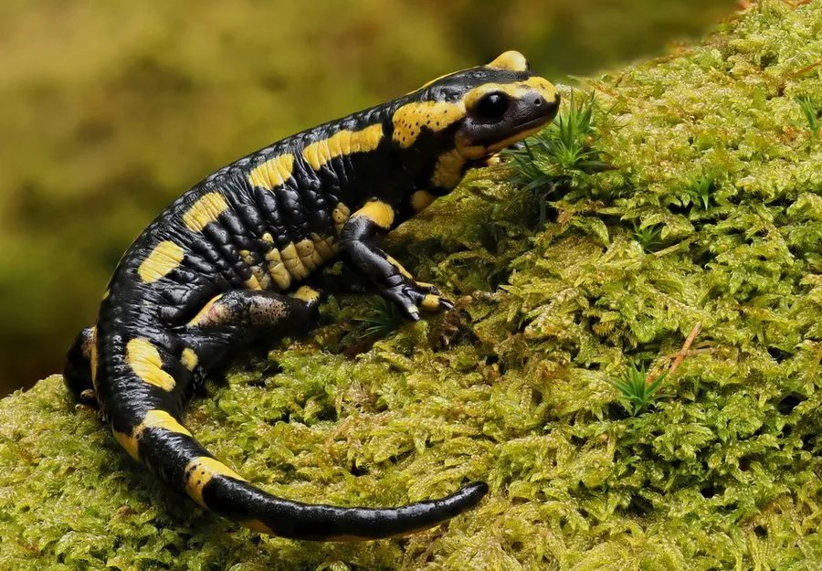

两栖动物 · 动物界
火蝾螈 Salamandra salamandra

欧洲森林中的黑黄相间蝾螈，皮肤腺能分泌神经毒素，雌螈直接在水中产下幼虫，被民间传说与火联系在一起。
- 分类
- 门脊索动物门纲两栖纲目有尾目科蝾螈科属蝾螈属
- 栖息环境
- 欧洲落叶林、山地溪流、倒木与石缝等潮湿环境
- 地理分布
- 欧洲中南部、巴尔干半岛及部分地中海岛屿
- 保护级别
- IUCN 无危（LC）；非中国原产，在中国无保护级别
物种志
火蝾螈体长 15–25 厘米，身体粗壮，皮肤光滑湿润，背面呈黑色，缀有鲜黄色或橙黄色的斑块和条纹，不同产地斑纹差异很大；耳后腺和背侧腺发达，遇到威胁时会分泌乳白色毒液。四肢短而有力，尾巴圆柱形，适合在陆地爬行。
它广泛分布于欧洲中南部和巴尔干半岛的落叶林、山地溪流附近，白天藏在石块、倒木和落叶下，夜间捕食昆虫、蠕虫、蛞蝓和小型节肢动物。与多数两栖动物不同，雌螈不产卵，而是把发育中的幼虫直接产在清凉的溪流或水塘中，幼虫有外鳃，约数月完成变态。火蝾螈的毒液可刺激皮肤和眼睛，接触后需洗手；民间传说它从火中诞生，其实是它常躲在人们搬动的柴堆里。
形态与习性
- 食性昆虫、蠕虫、蛞蝓和小型节肢动物
- 体长约 15–25 cm
- 毒性皮肤腺分泌神经毒素，接触后需洗手
- 繁殖雌螈直接产下带外鳃的幼虫于溪流中
- 活动节律夜行性，白天藏在石块和倒木下
- 寿命野外可达 20 年，人工饲养更久
趣味知识
- 火蝾螈常躲在柴堆里，被人连同木柴投入火中后逃出，因此得名“火蝾螈”。
- 它的皮肤能分泌神经毒素，天敌吞食后会中毒，接触后要洗手。
- 火蝾螈不产卵，雌螈直接把带外鳃的幼虫产在溪水中。